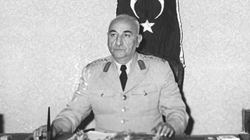

Cemal Gürsel

Cemal Gürsel (10 Haziran 1895; Hınıs, Erzurum - 14 Eylül 1966, Ankara), Türk asker ve siyasetçi.
1960 Darbesi sonrası oluşturulan Millî Birlik Komitesi başkanı ve Türkiye Cumhuriyeti'nin dördüncü Cumhurbaşkanıdır.
27 Mayıs Darbesi öncesinde Kara Kuvvetleri Komutanı oldu (25 Ağustos 1958).
2 Mayıs 1960 tarihinde ziyareti sırasında sohbet ettiği Millî Savunma Bakanı Ethem Menderes'e ve dolayısıyla hükûmete görüşlerini açıkladı.
3 Mayıs 1960 tarihinde Cumhurbaşkanı Celâl Bayar'ın istifasını istediği tarihi mektubu yazdı.
Bu mektubunda Başbakan Adnan Menderes'in halk tarafından çok sevildiğini belirterek Bayar yerine Cumhurbaşkanlığına getirilmesini önerdi.
Bunun üzerine iki ay sonra res'en emekliliğe sevk edilmek üzere zorunlu izinle İzmir'e gitti.
Silahlı Kuvvetlerin tüm kademelerine iletilen ve ordunun mutlaka siyasetten uzak kalmasını tavsiye eden veda mektubunda Gürsel'in ifadeleri:
"Ordunun ve taşıdığınız üniformanın şerefini daima yüksek tutunuz.
Şu sırada memlekette esen hırslı politika havasının zararlı tesirlerinden kendinizi korumasını biliniz.
Ne pahasına olursa olsun politikadan katiyyen uzak kalınız. Bu, sizlerin şerefi, ordunun kudreti ve memleketin kaderi için ehemmiyeti haizdir." idi.
27 Mayıs 1960 tarihinde albay ve daha alt kademedeki subaylarca gerçekleştirilen darbe sonrasında 3. Ordu Komutanı
Orgeneral Ragıp Gümüşpala'nın Millî Birlik Komitesi'ne (MBK) liderlerinin kim olduğunu sorması ve eğer başlarında kendisinden
daha kıdemli bir asker olmadığı takdirde 3. Ordu ile birlikte Erzurum'dan Ankara'ya yürüyüp isyana son vereceğini bildirmesi üzerine,
ihtilalciler zorunlu izindeki Orgeneral Cemal Gürsel'i askeri uçakla İzmir'den Ankara'ya getirdiler.
Gürsel MBK'nın daveti ile başkanlık görevini üstlendi ve ihtilal lideri olarak kabul edildi. Kendisiyle yapılan
16 Temmuz 1960 tarihli bir gazete (Cumhuriyet) görüşmesinde ise, ‘Şebeke zaten hazırdı. Ben şahsen ordunun siyasete katılmasını
istemiyor ve genç arkadaşlarımın (ihtilal) girişimlerine engel oluyordum. İşler öyle bir seviyeye geldi ki, ordunun siyasete karışmasına
karşı olmama rağmen, onları görevlerinde serbest bıraktım. Şimdi bütün hedefim, adalet ve ahlak prensiplerine dayalı bir idareyi yeniden kurmaktır.’ açıklamasında bulundu.
Cemal Gürsel, 27 Mayıs 1960 günü öğleden sonra, İstanbul ve Ankara Üniversiteleri
Hukuk Fakültelerinin öğretim üyeleri Ordinaryüs Profesör Sıddık Sami Onar, Ord. Prof. Hıfzı Veldet Velidedeoğlu,
Prof. Ragıp Sarıca, Prof. Naci Şensoy, Prof. Hüseyin Nail Kubalı, Prof. Dr. Tarık Zafer Tunaya, Doç. Dr. İsmet Giritli, Prof. İlhan Arsel,
Prof. Bahri Savcı, Prof. Muammer Aksoy ve hocalarına yardım eden İstanbul Üniversitesi Hukuk Fakültesi asistanı (eski YÖK Başkanı ve uzmanlık alanı Anayasa hukuku olan)
Prof. Erdoğan Teziç'i kabul etti. Ord. Prof. Sıddık Sami Onar, heyet adına : "Bugün içinde bulunduğunuz durumu adi ve siyasi bir hükûmet darbesi saymak doğru değildir."
ifadesinde bulundu. Heyet, Gürsel tarafından yeni bir Türkiye’nin anayasa (1961) taslağını hazırlamakla resmen görevlendirildi.
Cemal Gürsel, 30 Mayıs 1960 tarihinde TBMM Genel Kurulu'nda okunan programda "İkinci Cumhuriyet" tanımını ilk kez şu cümlelerle kullandı:
“İkinci Cumhuriyet'in Anayasa'sı, ilmin ve geçmiş uzun yılların acı tecrübelerinin ışığı altında, memleketin mümtaz ilim adamlarının geceli
gündüzlü çalışmaları memleket aydınlarının bu çalışmalara anketler vasıtasıyla katılmaları suretiyle hazırlanmaktadır. Birleşmiş Milletler Anayasası,
İnsan Hakları Beyannamesi, Hukuk prensipleri ve millî ruh ve ihtiyaçlardan doğmuş olan eski Anayasamız ile millî gelenekler ve yurdumuzun özellikleri yeni
Anayasamız için ilham alınan başlıca kaynakları teşkil etmektedir.”
Tutuklu gazeteci ve öğrencilerin serbest bırakılmasını, yasaklı kapatılmış gazetelerin yeniden açılmasını sağladı. Emekliye ayrilan Orgeneral Ragıp Gümüşpala'ya Demokrat Partilileri bir araya getiren Adalet Partisi'ni kurma gorevini verdi. Anayasanın ardından en önemli sorun Yassıada'daki yargılamanın sonuçlarıydı. Bu noktada Cemal Gürsel'in gücü ancak 15 idamı üçe indirmeye yetti. Devlet Başkanı Cemal Gürsel ve İsmet İnönü’nun, diğer dünya liderleri ile birlikte Adnan Menderes ve diğer iki kabine uyesinin idam cezalarının affı dilekleri, Millî Birlik Komitesi'nin idam cezalarının onaylanma kararlarının seçimle kurulacak olan yeni meclis tarafından verilmesi dilekleriyle birlikte, yönetimi sivil iradeye bırakmaya yanaşmayan Silahlı Kuvvetler Birliği tarafından reddedildi.
Başbakanlık ve cumhurbaşkanlığı görevleri için Ankara ve İstanbul'daki çeşitli akademisyenlere ve doktorlara teklifte bulundu ve destek verdi. Kendisinin seçilmesi için dolaylı ya da doğrudan hiçbir girişim ya da lobi faaliyetinde bulunmadı.
Halk oyuna sunulan ve kabul edilen yeni Anayasa gereğince, 10 Ekim 1961'de yapılan genel seçimlerden sonra oluşturulan yeni Türkiye Büyük Millet Meclisi tarafından cumhurbaşkanlığına seçildi.
Yüksek Adalet Divanı tarafından verilen idam kararlarının onaylanmasıyla ilgili aleyhte oy kullanmıştır.
Cumhurbaşkanı Celâl Bayar ve Genelkurmay Başkanı Orgeneral Rüştü Erdelhun'a verilen hapis cezalarını affetti.
İlk Devlet Araştırma Kütüphanesi ve hükûmete yol göstericilik görevini yasayla verdiği Türkiye Bilimsel Teknik Araştırma Kurumunu kurdu.
Ordunun binek otomobil ihtiyacını karşılamak amacı da güden, ilk yerli ve seri üretimi hedefleyen Devrim Otomobili projesini başlattı.
Devlet başkanlığı ve cumhurbaşkanlığı görevlerini ve ilgili masraflarını devletten maaş almadan, emekli asker maaşıyla karşıladı.
Gürsel, 1960'ta hafif bir felçle başlayan hastalığının gitgide ilerlemesi üzerine 2 Şubat 1966'da Başkan Lyndon B. Johnson'un özel uçağıyla tedavi için Amerika Birleşik Devletleri'ne gitti. Kısa süre sonra komaya girince 26 Mart'ta Ankara'ya getirildi. Hekimler kurulunun, sağlığının görevini sürdürmeye engel olduğuna ilişkin raporu üzerine, TBMM kararıyla 28 Mart tarihinde cumhurbaşkanlığına son verildi. Yerine, eski Genelkurmay Başkanı ve kontenjan senatörü Cevdet Sunay seçildi. Yaklaşık 7,5 ay komada kalan Gürsel, 14 Eylül 1966 günü vefat etti. Geriye hiçbir vasiyet ve kendisi ile ilgili dilek bırakmadı. 18 Eylül 1966 Pazar günü Naaşı, Anıtkabir devrim şehitleri bölümünde toprağa verildi. Naaşı, 30 Ağustos 1988'de Anıtkabir'den alındı ve 2549 Sayılı kanun ile, Devlet Mezarlığı'na nakledildi.